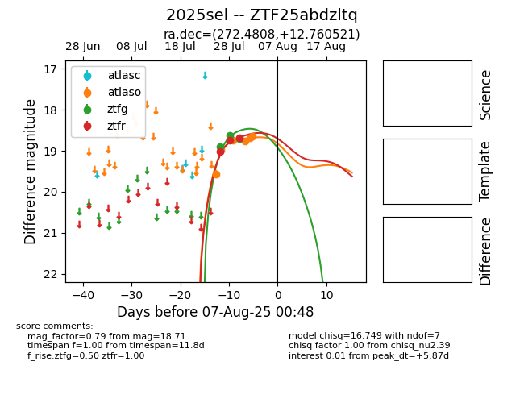

Target 2025sel at 2025-08-07 00:53, see:
FINK: fink-portal.org/2025sel
Lasair: lasair-ztf.lsst.ac.uk/objects/2025sel
ALeRCE: alerce.online/object/2025sel
TNS: wis-tns.org/object/2025sel
YSE: ziggy.ucolick.org/yse/transient_detail/2025sel
alt names
ZTF25abdzltq (ztf,fink)
2025sel (tns,yse)
coordinates:
equatorial (ra, dec) = (272.4808,+12.76052)
galactic (l, b) = (39.8535,+14.89748)
photometry
last atlaso=18.61, ztfg=18.71, ztfr=18.69
8 atlaso, 3 ztfg, 3 ztfr detections
